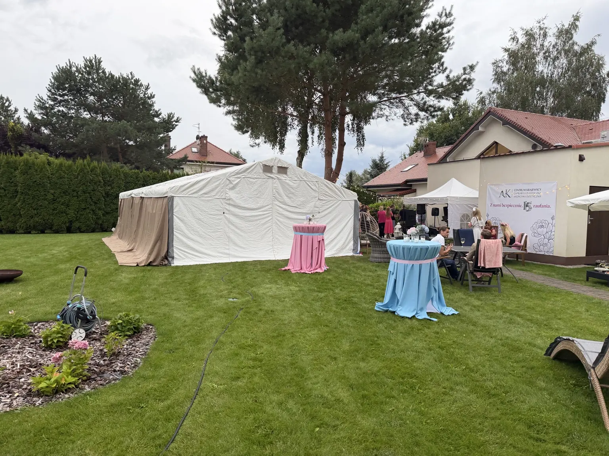
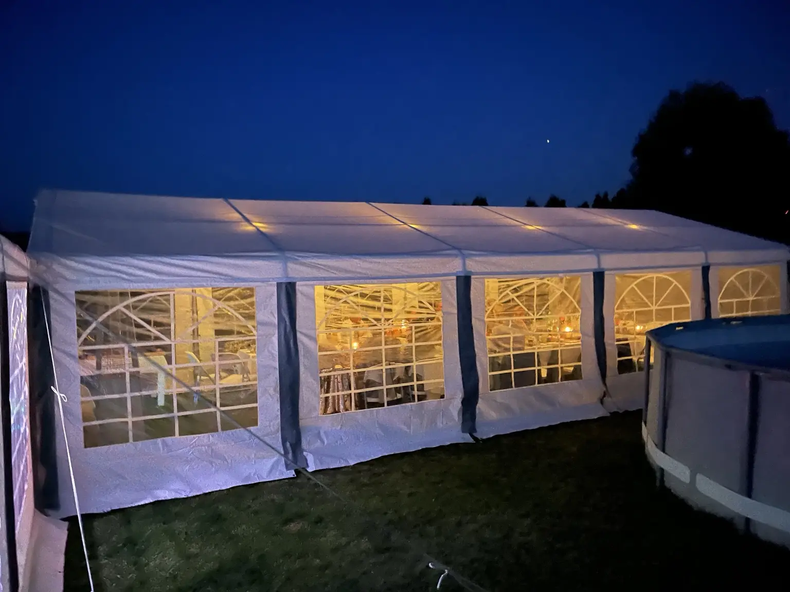
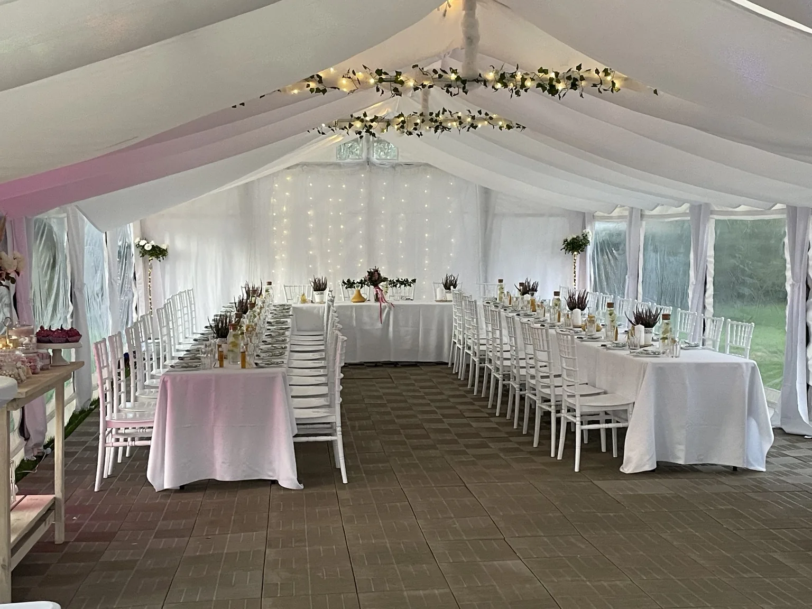
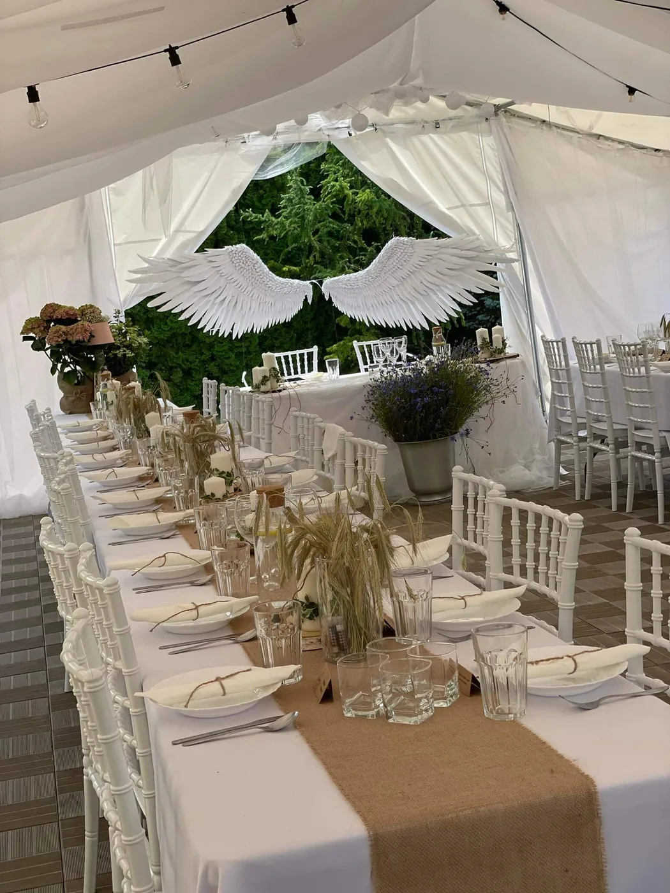
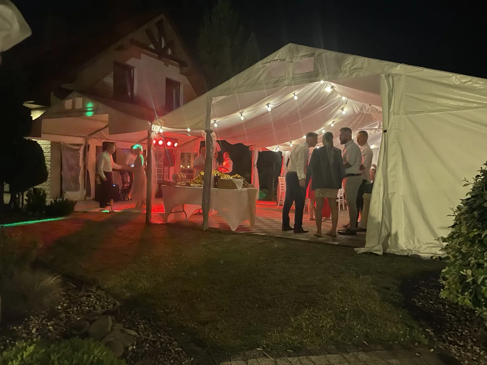
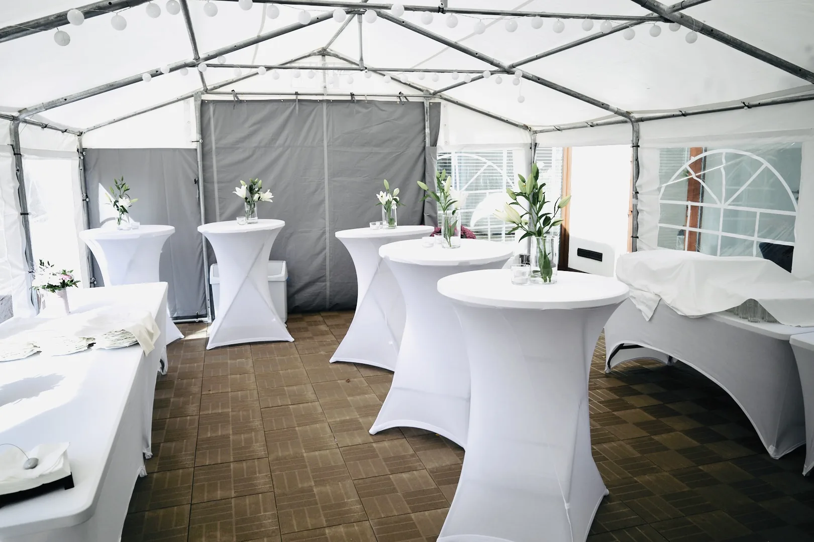
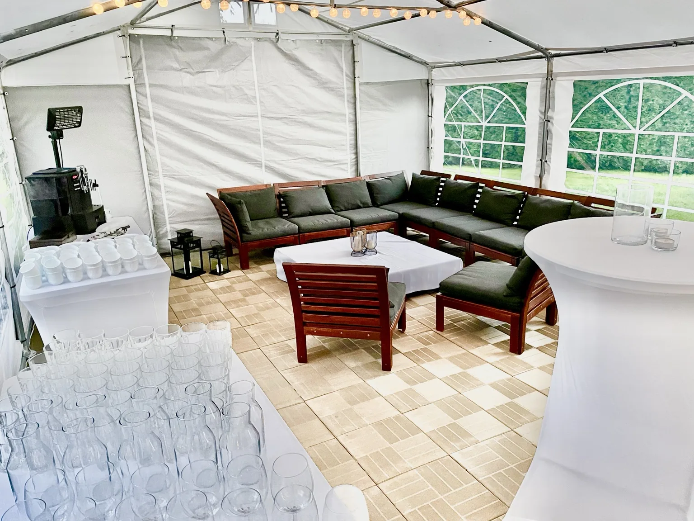
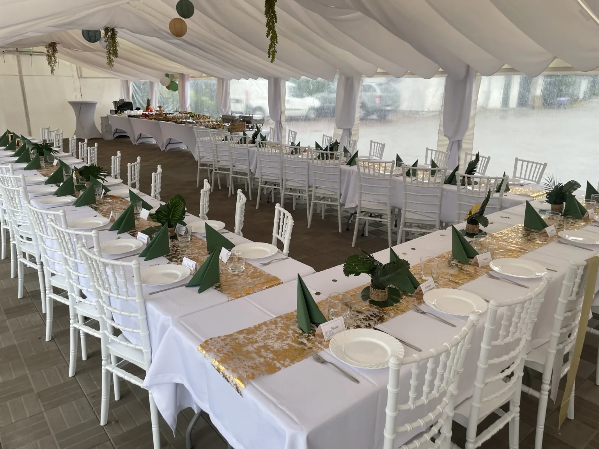

Namioty imprezowe
Namioty 3×3 m, 3×6 m oraz duży namiot 6×16 m. Dobieramy konfigurację do miejsca, charakteru wydarzenia i liczby gości.
Organizacja imprez plenerowych
Namioty, stoły, krzesła, zastawa i kompletne wyposażenie wydarzeń. Zapewniamy transport, montaż oraz rozwiązania dopasowane do miejsca i liczby gości.
Co zapewniamy
Od samego namiotu po kompletnie przygotowane miejsce dla gości w Szczecinie i okolicach.
Namioty 3×3 m, 3×6 m oraz duży namiot 6×16 m. Dobieramy konfigurację do miejsca, charakteru wydarzenia i liczby gości.
Stoły, ławki, krzesła, obrusy, porcelana, szkło, sztućce i wyposażenie bufetu.
Dostarczamy sprzęt, montujemy namioty, ustawiamy przestrzeń i przygotowujemy ją zgodnie z ustalonym planem.


Wspólnie z Knajpką
PARTY TENT buduje przestrzeń, a Knajpka Rodzinna odpowiada za catering, grill i obsługę.
To wygodne rozwiązanie dla komunii, wesel, jubileuszy, imprez integracyjnych, dożynek i wydarzeń firmowych. W takim modelu zapewniliśmy catering, namioty oraz wyposażenie również podczas realizacji dla firmy Budimex.
Realizacje
Od kameralnej strefy lounge po duże przyjęcie z kompletnym wyposażeniem i wieczornym oświetleniem.






Bezpośredni kontakt
Namioty, wyposażenie, transport i montaż w Szczecinie oraz okolicach.
Podaj miejsce i orientacyjną liczbę gości — dobierzemy rozwiązanie.